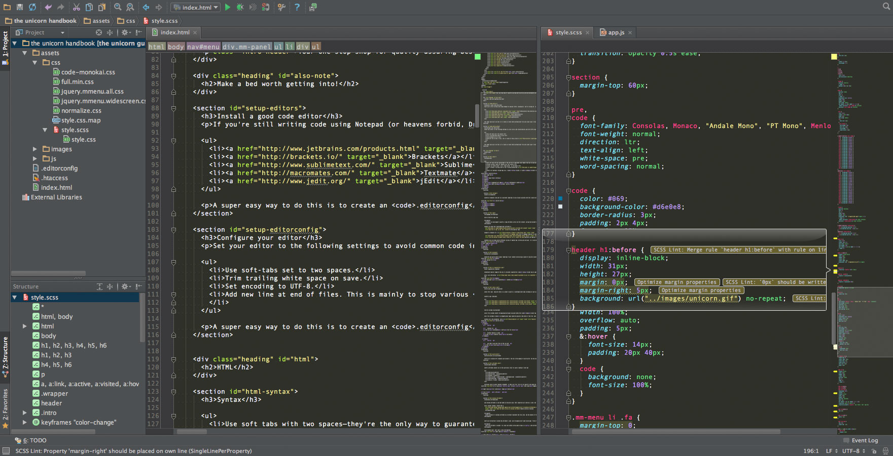

Your one-stop-shop for quality assuring best practices and web development advice.
Getting started...
Start by making a bed worth getting into. This means finding yourself a good editor with an automated workflow set up to make development a breeze. With the groundwork in place, the rest of your build will be much faster, much easier, and much more enjoyable.
Install a good code editor
If you're still writing code using Notepad (or heavens forbid, Dreamweaver), you're missing out. Sublime is awesome and very fast even on slow computers. JetBrains on the other hand makes PhpStorm, a heavier but extremely competent editor, and my favourite by far. Microsoft released a new editor called Visual Studio Code in April 2015, and it looks like with time it could become quite a solid software.

Configure your editor
Set your editor to the following settings to avoid common code inconsistencies and dirty diffs:
A super easy way to ensure these things is to create an .editorconfig file with all the settings you wish to enforce. You then copy the file to the root of your projects and every editor with the EditorConfig plugin will read the file and automatically adjust its settings accordingly. Learn more about EditorConfig and you'll probably agree it's a great idea. Here is the .editorconfig that I like to use. Rename the file to ".editorconfig" once downloaded including the leading punctuation. Note that files starting with . may be hidden on your computer. Learn how to show hidden files on OS X.
Make it handle Sass
Sass lets you use features that don't exist in CSS yet like variables, nesting, mixins, inheritance and other goodies that make writing CSS efficient and fun. Once you start tinkering with Sass, it will take your preprocessed Sass file and save it out as a normal CSS file that you can use in your web site. More on this later.
And yes, there is also a thing called Less. If you're knowledgeable enough to have an opinion of which of these you prefer, then by all means go with what you know and prefer! For everyone else, Sass is what I prefer and highly recommend for so many reasons.
- Windows: Download and run the single-click Ruby installer
- Linux: Install Ruby through the apt package manager, rbenv, or RVM
- Mac: Ruby comes pre-installed with OS X.
Write SCSS like a pro
scss-lint is a customizable tool with opinionated defaults that helps you enforce a consistent style in your SCSS. For these opinionated defaults, we've had to make calls about what we think are the "best" style conventions, even when there are often reasonable arguments for more than one possible style. Here is the scss-link github page explaining more. Should you want to customize the checks run against your code, you can do so by editing your scss-lint configuration file to match your preferred style. You can also download my scss-config file to get a running start.
If you use Sublime for your code editing, there is a SCSS linting package for Sublime available for the job. If you're into the JetBrains editors like me, you should have a look at this SCSS lint plugin instead.
HTML
HTML Syntax
- Use soft tabs with two spaces as a way to guarantee that code renders the same in any environment
- Nested elements should be indented once (two spaces)
- Always use double quotes, never single quotes, on attributes (single quotes are used in CSS and JavaScript)
- Don't include a trailing slash in self-closing elements—the HTML5 spec says they're optional
- Don’t omit optional closing tags (e.g.
</li> or </body>).
<!DOCTYPE html>
<html lang="en">
<head>
<title>Page title</title>
</head>
<body>
<h1>The title</h1>
<img src="images/portrait.jpg" alt="Photograph of author">
</body>
</html>
HTML5 doctype
Enforce standards mode and more consistent rendering in every browser possible with this simple doctype at the beginning of every HTML page.
<!DOCTYPE html>
<html>
<head></head>
<body></body>
</html>
Language attribute
From the HTML5 spec:
Authors are encouraged to specify a lang attribute on the root html element, giving the document's language. This aids speech synthesis tools to determine what pronunciations to use, translation tools to determine what rules to use, and so forth.
Read more about the lang attribute in the spec.
Head to IANA for a list of the possible language sub tags.
Unless you are using several different versions of a language (eg. British and American), it is recommended to just use the language subtag on its own without a region subtag. To learn everything there is to know about the language tags, read the IETF's "best current practice" in BCP 47 (RFC 5646 and RFC 4647).
<!DOCTYPE html>
<html lang="en">
<!-- … -->
</html>
Character encoding
Quickly and easily ensure proper rendering of your content by declaring an explicit character encoding (generally UTF-8).
<head>
<meta charset="utf-8">
</head>
Do not use entity references
There is no need to use entity references like —, &, or ™, assuming the same encoding (UTF-8) is used for files and editors as well as amongst the team.
<!-- Poor -->
<p>The currency symbol for the Pound is “£”</p>
<!-- Good -->
<p>The currency symbol for the Pound is "£"</p>
IE compatibility mode
Internet Explorer supports the use of a document compatibility <meta> tag to specify what version of IE the page should be rendered with. Designating 'IE=edge' is the best practice because it ensures Internet Explorer uses the latest engine (including the latest security updates, feature support and overall faster execution).edge mode.
For more information, read the documentation at modern.IE.
<head>
<meta http-equiv="X-UA-Compatible" content="IE=edge">
</head>
CSS and JavaScript includes
Per HTML5 spec, typically there is no need to specify a type when including CSS and JavaScript files as text/css and text/javascript are their respective defaults, used if the attribute is absent.
HTML5 spec links
File include locations
CSS file includes should always be placed within the <head> tag of the document, beneath any <meta> tags.
JS file includes (<script> tags) should be placed at the bottom of the file, just before the closing </body> tag.
There are a few exceptions, such as Modernizr, which must be added to the <head> tag
<!DOCTYPE html>
<html>
<head>
<!-- … -->
<!-- External CSS -->
<link rel="stylesheet" href="main.min.css">
<!-- Include Modernizr in head -->
<script src="modernizr.js"></script>
</head>
<body>
<!-- … -->
<!-- any other JavaScript files at the very end -->
<script src="main.js"></script>
</body>
</html>
Practicality over purity
Strive to maintain HTML standards and semantics, but not at the expense of practicality. Use the least amount of markup with the fewest intricacies whenever possible.
Attribute order
HTML attributes should come in this particular order for easier reading of code.
classid, namedata-*src, for, type, hreftitle, altaria-*, role
Classes make for great reusable components, so they come first. Ids are more specific and should be used sparingly (e.g., for in-page bookmarks), so they come second.
<a class=" … " id=" … " data-modal="toggle" href="#">link title</a>
<input class="form-control" type="text">
<img src="..." alt="...">
Boolean attributes
A boolean attribute is one that needs no declared value. XHTML required you to declare a value, but HTML5 has no such requirement.
For further reading, consult the WhatWG section on boolean
attributes:
The presence of a boolean attribute on an element represents the true value, and the absence of the attribute represents the false value.
If you must include the attribute's value, and you don't need to, follow this WhatWG guideline:
If the attribute is present, its value must either be the empty string or [ … ] the attribute's canonical name, with no leading or trailing whitespace.
In short, don't add a value.
<input type="text" disabled>
<input type="checkbox" value="1" checked>
<select>
<option value="1" selected>1</option>
</select>
Reducing markup
Avoid superfluous parent elements when writing HTML. Many times this requires iteration and refactoring, but produces less HTML. Take the following example:
<!-- Poor -->
<span class="logotype">
<img src=" … ">
</span>
<!-- Good -->
<img class="logotype" src=" … ">
JavaScript generated markup
Writing markup in a JavaScript file makes the content harder to find and harder to edit. Avoid it whenever possible.
CSS
CSS and Sass Syntax
- Use soft tabs with two spaces to guarantee that code renders the same in any environment.
- When grouping selectors, keep individual selectors to a single line.
- Include one space before the opening brace of declaration blocks for legibility.
- Place closing braces of declaration blocks on a new line.
- Include one space after
: for each declaration.
- Each declaration should appear on its own line for more accurate error reporting.
- End all declarations with a semi-colon. The last declaration's is optional, but your code is more error prone without it.
- Comma-separated property values should include a space after each comma (e.g.,
box-shadow).
- Don't include spaces after commas within
rgb(), rgba(), hsl(), hsla(), or rect() values. This helps differentiate multiple color values (comma, no space) from multiple property values (comma with space).
- Don't prefix property values or color parameters with a leading zero (e.g.,
.5 instead of 0.5 and -.5px instead of -0.5px).
- Lowercase all hex values, e.g.,
#fff. Lowercase letters are much easier to discern when scanning a document as they tend to have more unique shapes.
- Use shorthand hex values where available, e.g.,
#f84 instead of #ff8844.
- Quote attribute values in selectors, e.g.,
input[type='text']. They're only optional in some cases, and it’s a good practice for consistency.
- Although they're optional, always use quotes around
url() values, to limit the risk of broken URLs (e.g., background-image: url('image.png').
- Always use single ' ' quotes instead of double " " quotes (technically it does not matter, but keep it consistent. Besides, it's how Google and many other large companies prefer their code formatted).
- Avoid specifying units for zero values, e.g.,
margin: 0; instead of margin: 0px;.
Questions on the terms used here? See the syntax section of the Cascading Style Sheets article on Wikipedia.
/* Poor */
.selector, .other-selector, .selector[type=text] {
padding: 0px;
margin:0px 0px 15px;
background-color:rgba(0, 255, 255, .5);
background-image:url(../img/sprite.png);
box-shadow:0px 1px 2px #88FF00,inset 0 1px 0 #EEEEEE
}
/* Good */
.selector,
.other-selector,
.selector[type='text'] {
padding: 0;
margin-bottom: 15px;
background-color: rgba(0,255,255,0.5);
background-image: url('../img/sprite.png');
box-shadow: 0 1px 2px #8f0, inset 0 1px 0 #eee;
}
Declaration order
Related property declarations should be grouped together following the order:
- Positioning
- Box model
- Typographic
- Visual
Positioning comes first because it can remove an element from the normal flow of the document and override box model related styles. The box model comes next as it dictates a component's dimensions and placement.
Everything else takes place inside the component or without impacting the previous two sections, and thus they come last.
When writing SCSS, always start with your @extend declarations, followed by your properties and finally the rule sets. I'm actually slowly changing my mind about the order and sometimes find myself preferring to simply sort my declarations alphabetically.
.declaration-order {
/* Positioning */
position: absolute;
top: 0;
right: 0;
bottom: 0;
left: 0;
z-index: 100;
/* Box-model */
display: block;
float: right;
width: 100px;
height: 100px;
/* Typography */
font: normal 13px 'Helvetica Neue', sans-serif;
line-height: 1.5;
color: #333;
text-align: center;
/* Visual */
background-color: #f5f5f5;
border: 1px solid #e5e5e5;
border-radius: 3px;
/* Misc */
opacity: 1;
}
Don't use @import
Compared to <link>s, @import is slower, adds extra page requests, and can cause other unforeseen problems. Avoid them and instead opt for an alternate approach:
- Use multiple
<link> elements
- Or even better! Compile your CSS with a SASS preprocessor into a single minified file
For more information, read this article by Steve Souders.
<!-- Avoid @imports -->
<style>
@import url('more.css');
</style>
<!-- Use link elements -->
<link rel="stylesheet" href="core.css">
Prefixed properties
When using vendor prefixed properties, indent each property such that the declaration's value lines up vertically for easy multi-line editing.
- In Textmate, use Text → Edit Each Line in Selection (⌃⌘A).
- In Sublime Text 2, use Selection → Add Previous Line (⌃⇧↑) and Selection → Add Next Line (⌃⇧↓).
/* Prefixed properties */
.selector {
-webkit-box-shadow: 0 1px 2px rgba(0,0,0,0.15);
box-shadow: 0 1px 2px rgba(0,0,0,0.15);
}
Single declarations
In instances where a rule set includes only one declaration, you may remove line breaks for readability and faster editing. Any rule set with multiple declarations should be split to separate lines.
However, consider your CSS validator reporting that you have a syntax error on Line 97. With a single declaration, there's no missing it. With multiple declarations, separate lines is a must for your sanity.
/* Single declarations optional on one line */
.class1 { width: 60px; }
.class2 { width: 140px; }
.class3 { width: 220px; }
/* Multiple declarations, one per line */
.sprite {
display: inline-block;
width: 16px;
height: 15px;
background-image: url('../img/sprite.png');
}
Shorthand notation
Strive to limit use of shorthand declarations to instances where you must explicitly set all the available values. Common overused shorthand properties include:
paddingmarginfontbackgroundborderborder-radius
Often times we don't need to set all the values a shorthand property represents. For example, HTML headings only set top and bottom margin, so when necessary, only override those two values. Excessive use of shorthand properties often leads to sloppier code with unnecessary overrides and unintended side effects.
The Mozilla Developer Network has a great article on shorthand properties for those unfamiliar with notation and behaviour.
/* Poor */
.element {
margin: 0 0 10px;
background: red;
background: url('image.jpg');
border-radius: 3px 3px 0 0;
}
/* Good */
.element {
margin-bottom: 10px;
background-color: red;
background-image: url('image.jpg');
border-top-left-radius: 3px;
border-top-right-radius: 3px;
}
Use Sass wisely
Avoid creating complex selectors. With Sass, unnecessary nesting is one of the easiest ways to over qualify your selectors. Just because you can nest, doesn't mean you always should. Consider nesting only if you must scope styles to a parent and if there are multiple elements to be nested. There is a level of convenience involved of course, but please keep the end result in mind.
Guil Hernandez at Treehouse wrote an article on How to Evaluate Front-End Code for Inefficiencies that deserves both one and two reads.
Class names
- Keep classes lowercase and use dashes (not underscores or camelCase). Dashes serve as natural breaks in related class (e.g.,
.btn and .btn-danger).
- Avoid excessive and arbitrary shorthand notation.
.btn is useful for button, but .s doesn't mean anything.
- Keep classes as short and succinct as possible.
- Use meaningful names; use structural or purposeful names over presentational.
- Prefix classes based on the closest parent or base class.
- Use
.js-* classes to denote behaviour (as opposed to style), but keep these classes out of your CSS.
It's also useful to apply many of these same rules when creating Sass variable names.
/* Bad example */
.a { … }
.background { … }
.red { … }
/* Good example */
.avatar { … }
.avatar-background{ … }
.important { … }
Selectors
- Use classes over generic element tag for optimum rendering performance.
- Avoid using several attribute selectors (e.g.,
[class^=" … "]) on commonly occurring components. Browser performance is known to be impacted by these.
- Keep selectors short and strive to limit the number of elements in each selector to three.
- Scope classes to the closest parent only when necessary (e.g., when not using prefixed classes).
Additional reading by Mark Otter:
/* Bad example */
.a { … }
.background { … }
.red { … }
/* Good example */
.avatar { … }
.avatar-background{ … }
.important { … }
Organisation
- Organise sections of code by component.
- Develop a consistent commenting hierarchy.
- Use consistent white space to your advantage when separating sections of code for scanning larger documents.
-
When using multiple CSS files, break them down by component instead of page. Pages can be rearranged and components moved.
This is also relevant for Sass, when using embedded files.
JavaScript
JavaScript code quality
As with CSS and Sass, a good linting program is an invaluable time saver and quality assuring tool you simply must explore if you've not already. Any code base eventually becomes huge at some point, and simple mistakes (that would not show themselves when written) can waste hours of debugging. And this is when static code analysis tools come into play and help developers spot such problems. JavaScript linters scans your JavaScript and reports mistakes and potential bugs. The potential problem could be a syntax error, a bug due to implicit type conversion, a leaking variable or something else. JSLint is the grandfather of JavaScript linting. Later JSHint rose to the challenge as a community driven project and is probably the better choice nowadays. Have a look at the JSHint installation page to see if you can find something for your own particular setup (I'm sure you can).
It seems that almost every large company have their own code style guide and they pretty much all say the same things. Here are a few to look at: Google JavaScript Style Guide, Mozilla Developer JavaScript Practices, jQuery JavaScript Style Guide, W3schools JavaScript Style Guide and Coding Conventions and the Airbnb JavaScript Style Guide is also a great resource.
One man that really knows what he is talking about when it comes to JavaScript coding is Rick Waldron. He and his buddies put together the essential reading Principles of Writing Consistent, Idiomatic JavaScript. Although not intended as something you should follow religiously, if you do it will infinitely improve the appearance of your code. I'm dead serious.
Learning JavaScript
If you're new to JavaScript, a good starting place to learn is the very introductory MDN JavaScript Basics. Also look at the JavaScript for cats introduction for new programmers. Once you've familiarised yourself a bit, consider the more in-depth look at JavaScript as a language and excellent reference source the JavaScript Guide, also on MDN. If you're serious about your learning I'd consider completing the fundamentals of JavaScript over at Codeacademy.com to get a running start.
One resource that must be mentioned is Superhero.js. A goldmine of articles, videos and presentations, curated into a continuously updated list that help explain the syntax of JavaScript, how to organize your projects, how to test your code, and what's on the horizon. For the more advanced users you have the whole Programming JavaScript Applications book by Eric Elliott free online.
JavaScript libraries
In this day and age we have a fantastic selection of JavaScript libraries at our fingertips, there to improve literally every aspect of modern web development. For general DOM manipulation, event handling, animation and much more, jQuery is the undisputed king. Talking about kings, Modernizr is probably one of the other most used libraries out there, providing finer control over your solution through feature detection and reporting. It's perfect for doing progressive enhancement easily. iScroll is a high performance, small footprint, dependency free, multi-platform scrolling library which is very popular although a complete overhaul is in the works. I'm a new user of Velocity as an animation tool instead of using jQuery or GreenSock and really like it so far. Having come from a Flash background I also enjoy dabbing with CreateJS now and again.
There is a JavaScript library for every occasion and it's easy to get overwhelmed trying to stay on top of everything new. I'll use this rant from one developer on the subject to add a few more links: "I just finished learning Backbone and now I've found out on HN that it's old news, and I should use Ember, cross that, it has opinions, I should use Meteor, no, Angular, no, Tower (on node.js), and for html templates I need Handlebars, no Mustache, wait, DoT is better, hang on, why do I need an HTML parser inside the browser? Isn't that what the browser for? So no HTML templates? Ok, DOM snippets, fine, Web Components you say? W3C are in the game too? You mean write REGULAR JavaScript like the Google guys? Yuck! Oh, I should write it in CofeeScript, not Coffee? Coco? LiveScript? DART? GWT? ... ..." He didn't even mention Knockout.
JavaScript Task Runners
Personally, I absolutely love how far you can get with a decent editor and a few plugins. Very seldom do the projects I run include additional task runners such as Gulp or Grunt for automation. That said, if you're a web developer you should at least know about these things. Grunt is probably the most popular task runner, with Gulp not far behind. Preslav Rachev wrote a great article comparing the two to help you decide. Then of course you have people such as Keith Cirkel suggesting we scale back a bit as in this article suggesting we stop using Grunt completely and simply rely on the good old npm package manager. He also wrote a superb article on how to use npm as a build tool.
Distributed Version Control Systems
Overview
Wikipedia knows it all: "Revision control, also known as version control and source control (and an aspect of software configuration management), is the management of changes to documents, computer programs, large web sites, and other collections of information." But I beg to differ on one point, source control is not only for large websites, it's for any type of site no matter how small. Even if only two guys work on the same code, or even just yourself, source control is your friend. I won't go into what you might be doing wrong right now such as keeping all your recent code directly on the ftp. People make changes to the same files, but how do you know if a file got changed while you were doing your own edits? When you upload, how do you know if you're overwriting updates made by others? You'd have to be pretty new in the game to work like this, but I've seen it happen more often than I'd like to admit. You say "but we keep backups and save copies of the different versions whenever we change something big". Slow clap on that. Just the thought makes my skin crawl! If you're not into proper source control, now is the time to start. It will keep your code safe. You'll be able to see what files have been changed and by whom and even when. You'll be able to have several people work on the same files and then as if by magic have the individual updates combine into one. You'll be able to see the change history of files including every single time it was updated, and every single line of code that got changed. You'll even be able to step back in time for some files but not others should you wish to go back to a previous version. If you're working on a larger site, there are endless other benefits such as linking updates to logged issues, time tracking, branch management, etc. Distributed source control is of course superior compared to solutions such as Subversion in that you don't have to be connected to be able to work with it, but taking Git as an example there are in my mind so many other things making it the superior choice. I'm not the only one that feels this way and Git is rapidly becoming the de facto standard when it comes to general source control.
Getting started with Git
I admit that taking your first steps in this direction can be pretty daunting for a beginner. Please don't let that discourage you. You'll thank me later and honestly it's not as difficult as it may seem at first glance. First of all you need to sign up to a service such as GitHub or Bitbucket. When it comes to using these services, you'd probably not want to do the terminal kind of way as a beginner. If you do, check out The simple guide by Roger Dudler. It's to the point and as he writes "No deep shit". c0deporn released a really good video called Learn Git in 20 minutes which also shows you how to use Git from the terminal. You could of course make your life a bit easier by downloading a software such as SourceTree or Tower or even the GitHub apps for OS X and Windows. You can set all of them up to work with both GitHub and Bitbucket. I really like SourceTree myself. There is a million and one tutorials out there, but this video called GitHub - a Step by Step For Beginners using SourceTree GUI is pretty good.
Learning how to use Git
What can I say... Find a friend already using Git, and ask to sit with them for a few hours to see how it's done. That's how I picked it up! If this is not an option, there is a very good Git Beginner's Guide for Dummies series by Backlogtool.com with a Getting started module for beginners and a Working with Git section for intermediate users. They also have a very comprehensive topic specific help section. One resource I really like the look of is the /learn/ step-by-step course for the complete beginner by Tower (the software I mentioned earlier). It's free, very polished, and includes a fantastic eBook, several video courses and a one hour recorded webinar. Other than that, Google is your friend.